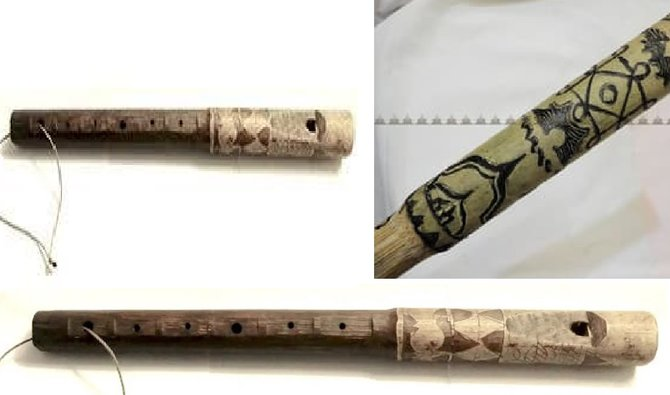
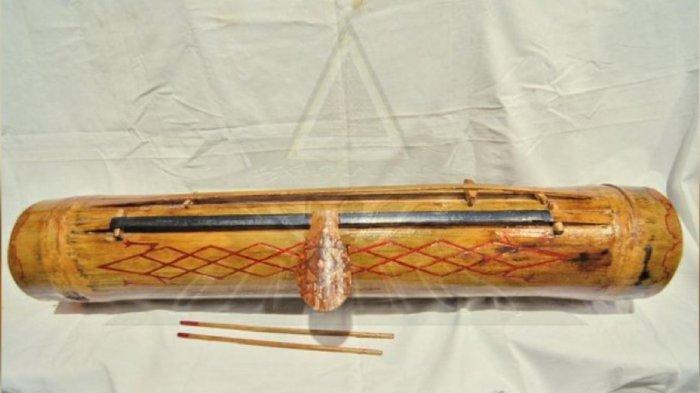
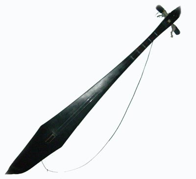
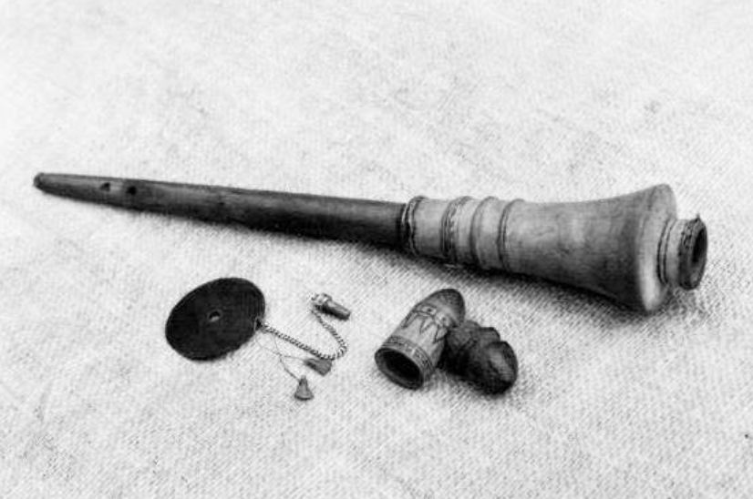
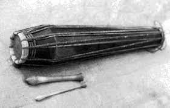
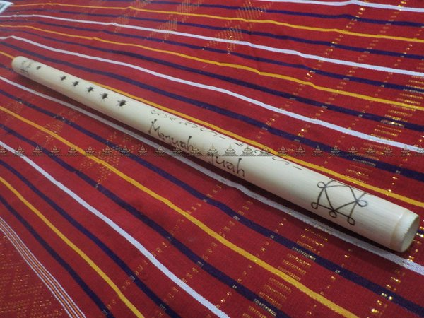

|  |
- Belobat
- Serunai adalah alat musik tiup
- Cara memainkannya dengan cara ditiup melalui pernapasan diafragma
atau pernapasan perut
- Alat musik ini hampir sama dengan suling hanya saja ukuran lebih pendek
dibandingkan dengan suling
|
|  |
- Keteng-keteng
- Alat musik ini dimainkan dengan cara di pukul
- Alat musik ini terbuat dari bambu
|
|  |
- Kulcapi
- Alat musik ini terbuat dari bahan kayu pilihan hutan
- Alat musik ini dimainkan dengan cara dipetik
- Alat musik ini memiliki 2 senar
|
|  |
- Serunai
- Alat musik ini terbuat dari bahan bambu pilihan
- Alat musik ini dimainkan dengan cara ditiup sama seperti alat
musik suling
|
 |
- Singanaki
- Alat musik ini terbuat dari bahan bambu pilihan spesial dari hutan
- Alat musik ini dengan cara dipukul
- Alat musik ini biasanya dimainkan di acara adat
|
|  |
- singindungi
- Alat musik ini terbuat dari bahan bambu pilihan
- Alat musik ini dimainkan dengan cara dipukul juga
- Alat musik ini sama seperti alat musik singanaki
|
|  |
- Surdam
- Alat musik ini terbuat dari bahan bambu
- Alat musik ini biasanya dipakai dalam acara peradatan khusus di suku karo
- Alat musik ini dimainkan dengan cara ditiup
|